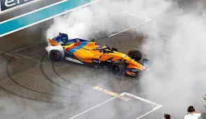
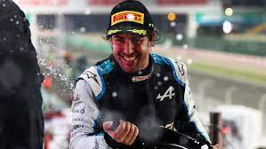
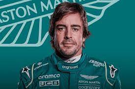

Fernando Alonso Díaz (Oviedo, Asturias; 29 julio de 1981) es un piloto de automovilismo español, galardonado como Premio Príncipe Asturias en 2005. Ha ganado dos veces el Campeonato Mundial de Fórmula 1 consecutivamente, en 2005 y 2006. Tiene una hermana mayor, Lorena. Su padre, José Luis Alonso, fue quien transmitió toda su pasión del mundo del motor a la persona que ahora conocemos como "Fernando Alonso". La pasión de Fernando por este deporte es curiosa. Su padre le construyó un "kart" a su hija Lorena, y él quería que Lorena aprendiese a conducir ese kart. En cambio, fue Fernando Alonso quien mostró interés por ese kart y con solo 3 años, aprendió a conducir. Desde los cuatro años hasta los catorce, Alonso estudió en el colegio Santo Ángel de la Guarda, en Oviedo. Más tarde, en el 2000, tomó una de las decisiones más importantes de su vida. Dejó los estudios y se centró solo en el mundo del automovilismo.
Ha participado en muchas competiciones internacionales, pero la más conocida e importante por todos los aficionados es la Fórmula 1 . También ha participado en otras competiciones, como por ejemplo el Campeonato Mundial de Karting, el Campeonato Mundial de Resistencia de la FIA, las 24 Horas de Le Mans y las 24 Horas de daytona, siendo el piloto español más laureado del automovilismo español.


Hay muchísimas mas curiosidades sobre la biografía de Fernando alonso. Si quereís saber más sobre él, no dudéis en pinchar Aquí.
| AÑO | DORSAL | EQUIPO | MOTOR | NEUMATICOS | CHASIS | POS. | VIC. | POLES | GPs | PTOS. |
| 2021 | 14 | Alpine | Renault | Pirelli | A521 | 10 | - | - | 21 | 81 |
| 2018 | 14 | McLaren | Renault | Pirelli | MLC-33 | 11 | - | - | 21 | 50 |
| 2017 | 14 | McLaren | Honda | Pirelli | MLC-32 | 15 | - | - | 19 | 17 |
| 2016 | 14 | McLaren | Honda | Pirelli | MP4-30 | 10 | - | - | 20 | 54 |
| 2015 | 14 | McLaren | Renault | Pirelli | MP4-30 | 17 | - | - | 18 | 11 |
| 2014 | 14 | Ferrari | Ferrari | Pirelli | F14 T | 6 | - | - | 19 | 161 |
| 2013 | 3 | >Ferrari | Ferrari | Pirelli | F138 | 2 | 2 | - | 19 | 242 |
| 2012 | 5 | Ferrari | Ferrari | Pirelli | F2012 | 2 | 3 | 2 | 20 | 272 |
| 2011 | 5 | Ferrari | Ferrari | Pirelli | 150ºItalia | 4 | 1 | - | 19 | 257 |
| 2010 | 8 | Ferrari | Ferrari | Bridgestone | F10 | 2 | 5 | 2 | 19 | 252 |
| 2009 | 7 | Renault | Renault | Bridgestone | R29 | 9 | - | 1 | 17 | 26 |
| 2008 | 5 | Renault | Renault | Bridgestone | R28 | 5 | 2 | - | 18 | 61 |
| 2007 | 1 | McLaren | Mercedes | Bridgestone | MP4-22 | 3 | 4 | 2 | 17 | 109 |
| 2006 | 1 | Renault | Renault | Michelin | R26 | 1 | 7 | 6 | 18 | 134 |
| 2005 | 5 | Renault | Renault | Michelin | R25 | 1 | 7 | 6 | 19 | 133 |
| 2004 | 8 | Renault | Renault | Michelin | R24 | 59 | - | 1 | 18 | 59 |
| 2003 | 8 | Renault | Renault | Michelin | R23 | 6 | 1 | 2 | 16 | 55 |
| 2001 | 21 | Minardi | PS01 | Michelin | European | 23 | - | - | 16 | - |
Fernando Alonso abandonó la Fórmula 1 termporalmente en el año 2018. Los espectadores sabían que él volvería tarde o temprano a esta competición porque en su última carrera del año 2018 escribió en su coche estas palabras: "Hasta luego". Fernando acabaría volviendo en el año 2021 fichando por el equipo donde consiguió sus 2 campeonatos del mundo, Renault, aunque ahora se le conocía a esta escudería como Alpine. Lograría el primer y único podio con esta escudería en el GP de Qatar, logrando el tercer puesto tras una carrera un tanto accidentada. En el 2022, continuaría en esta escudería, pero ya ha firmado un contrato por 1 año con otra escudería, Aston Martin, donde será muy bien recibido gracias a su gran palmarés y a su humildad y generosidad.


